<html>

<head>
<meta http-equiv="Content-Language" content="es">
<meta http-equiv="Content-Type" content="text/html; charset=windows-1252">
<meta name="GENERATOR" content="Microsoft FrontPage 4.0">
<meta name="ProgId" content="FrontPage.Editor.Document">
<title>Juan Uviedo y el Taller de investigaciones teatrales</title>
<meta name="description" content="Historia de Juan Uviedo en el teatro">
<meta name="Microsoft Theme" content="copia-de-pintura-sumi 0001, default">
<meta name="Microsoft Border" content="tl, default">
</head>

<body background="_themes/copia-de-pintura-sumi/sumtextb.jpg" bgcolor="#FFFFFF" text="#000000" link="#0000FF" vlink="#800080" alink="#CC0000"><!--msnavigation--><table border="0" cellpadding="0" cellspacing="0" width="100%"><tr><td><!--mstheme--><font face="Verdana, Arial, Helvetica">

<font size="6"><strong>&nbsp;
<i>Taller de investigaciones teatrales</i></strong></font><!--mstheme--></font></td></tr><!--msnavigation--></table><!--msnavigation--><table dir="ltr" border="0" cellpadding="0" cellspacing="0" width="100%"><tr><td valign="top" width="1%"><!--mstheme--><font face="Verdana, Arial, Helvetica">

<a href="index.htm"></a><br><a href="historia.htm"></a><br><br><a href="montajes.htm"></a><br><a href="zangandongo.htm"></a><br><a href="manifiestos.htm"></a><br><a href="alterarte_1.htm"></a><br><a href="1er_viaje_a_brasil.htm"></a><br><a href="tic.htm"></a><br><a href="alterarte_2.htm"></a><br><a href="film.htm"></a><br><a href="muestra.htm"></a><br><a href="mencion.htm"></a><br><a href="titeanos.htm"></a><br><a href="enlaces.htm"></a><!--mstheme--></font></td><td valign="top" width="24"></td><!--msnavigation--><td valign="top"><!--mstheme--><font face="Verdana, Arial, Helvetica">
<p>&nbsp;</p>
<!--mstheme--></font><table border="0" width="73%">
  <tr>
    <td width="24%"><!--mstheme--><font face="Verdana, Arial, Helvetica">
<p align="center"><b><i><u><font size="5">Juan Carlos Uviedo</font></u></i></b></p>
    <!--mstheme--></font></td>
    <td width="76%"><!--mstheme--><font face="Verdana, Arial, Helvetica">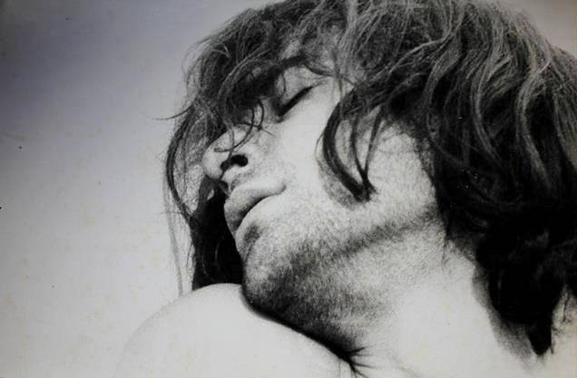<!--mstheme--></font></td>
  </tr>
</table><!--mstheme--><font face="Verdana, Arial, Helvetica">
<blockquote>
<p>Rebelde, desde muy joven eligió el arte para transgredirlo, pero también
como medio para transgredir en la vida, para intentar abrir las mentes y la
sensibilidad de los humanos, romper cánones sociales retrógrados, prejuicios
que limitan la experiencia, pautas institucionales (religiosas, educacionales)
que someten a las personas, y socavar cualquier tipo de opresión. También desde
joven se hizo trotamundo para
codearse con los grandes artistas que proponían y experimentaban, para aprender de
ellos pero a la vez aportar su visión, producir y enseñar, organizar y crear,
ayudar a formar jóvenes artistas que luego harían su propio camino con un
extenso bagaje. Para multiplicar. Nunca lo que hizo fue esperando alabanzas y
aplausos, ni siquiera para &quot;gustar&quot;. Hizo lo que quiso hacer, y lo que creía que se debía
hacer; su producción podía ser bienvenida o no. Si su transgresión provocaba desprecio e incluso odio en otros, no
le preocupaba. Visitó lugares y países gobernados por fascistas, o donde los
fascistas deambulaban impunemente, y eso no lo
amedrentó. Estaba más
satisfecho cuando sus hechos artísticos eran comentados en las secciones de
policiales o sociales de los diarios que en la de <i>espectáculos</i>.&nbsp;Para
él el teatro era una herramienta para provocar y movilizar. El templo TEATRO había que
&quot;demolerlo&quot;, había que llevar el teatro a otros espacios donde se
pudiera involucrar a la gente.&nbsp;</p>
</blockquote>
<!--mstheme--></font><table border="0" width="100%">
  <tr>
    <td width="38%"><!--mstheme--><font face="Verdana, Arial, Helvetica">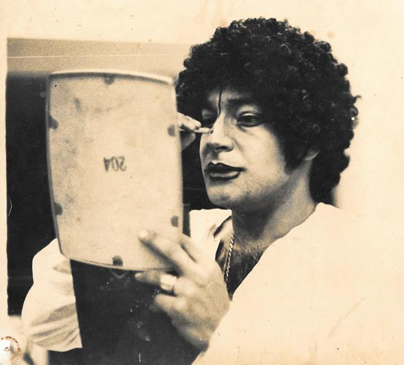<!--mstheme--></font></td>
    <td width="62%"><!--mstheme--><font face="Verdana, Arial, Helvetica">
      <blockquote>
<p style="line-height: 100%; margin-left: 0; margin-right: 0cm; margin-top: 0cm; margin-bottom: 0">Recorrió
varios países de <b>Europa</b>. Produjo en Checoslovaquia, Francia, Grecia, España, Portugal, Italia, y otros
países. En España estuvo preso,
pero lo trataron bien, aunque gobernaba el dictador Franco. Su primer viaje a
ese país fue en 1966, produciendo con varios grupos experimentales en Madrid y
Barcelona.&nbsp;
      </p>
<p style="line-height: 100%; margin-left: 0; margin-right: 0cm; margin-top: 0cm; margin-bottom: 0">&nbsp;
      </p>
<p style="line-height: 100%; margin-left: 0; margin-right: 0cm; margin-top: 0cm; margin-bottom: 0"><a href="nota_en_revista_gente.htm">Nota
de revista Gente</a> (1968) donde relata sus comienzos y comenta su puesta
&quot;<i>El esperapalomas</i>&quot; en el Di Tella.
      </p>
<p style="line-height: 100%; margin-left: 0; margin-right: 0cm; margin-top: 0cm; margin-bottom: 0">&nbsp;
      </p>
<p style="line-height: 100%; margin-left: 0; margin-right: 0cm; margin-top: 0cm; margin-bottom: 0"> Recorrió países de <b>Latinoamérica</b> y en varios de
ellos trabajó artísticamente con campesinos e indígenas. Giró en 1968 por <b>Estados Unidos</b>
formando parte del elenco dirigido por Delfor Peralta presentando &quot;<i>Esta
noche teatro</i>&quot;. En 1969 volvió a España y dirigió al grupo Tábano
en el montaje &quot;<a href="dominantes.htm">El juego de los dominantes</a>&quot;.
Ese
mismo año fue invitado a dirigir el CITAC (<i>Círculo de Iniciación Teatral
de la Academia de Coimbra</i>) en Portugal, con el que al año siguiente montó
&quot;<a href="macbeth.htm">Macbeth...o que se pasa na tua cabeça</a>&quot; en
Portugal e Italia. El gobierno fascista
portugués acusó a Juan de dirigir una &quot;escuela de perversión&quot; y fue encarcelado,
torturado y expulsado. El CITAC fue prohibido y quedó inactivo hasta después
de la Revolución de los claveles de 1974.&nbsp;De
vuelta en Estados Unidos, entre
1970 y 1971 dirigió varios montajes del grupo La MaMa Experimental
Theatre Club de Nueva York: “<i>Suicide in Alexandria</i>”, “<i>A
little history of the world</i>”, “<i>Coffins for butterflies</i>”, “<i>El
amor de la estanciera</i>” (este último en Puerto Rico), entre otros.<o:p>
 Enseñó en la universidad de Berkeley.</o:p>
      </p>
      </blockquote>
      <p>&nbsp;<!--mstheme--></font></td>
  </tr>
</table><!--mstheme--><font face="Verdana, Arial, Helvetica">
<p class="CM58" style="line-height: 100%; margin-left: 0; margin-right: 0cm; margin-top: 0cm; margin-bottom: 0">&nbsp;</p>
<p class="CM58" style="line-height: 100%; margin-left: 0; margin-right: 0cm; margin-top: 0cm; margin-bottom: 0">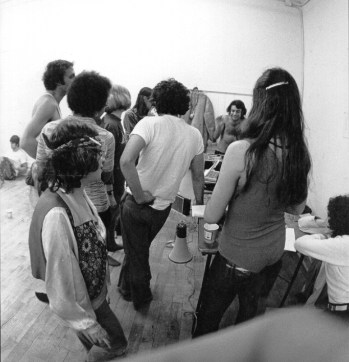
Juan dirigiendo en La MaMa ETC</p>
<p class="CM58" style="line-height: 100%; margin-left: 0; margin-right: 0cm; margin-top: 0cm; margin-bottom: 0">&nbsp;</p>
<p class="CM58" style="line-height: 100%; margin-left: 0; margin-right: 0cm; margin-top: 0cm; margin-bottom: 0">En
junio de 1971 dirigió el hecho teatral &quot;<a href="che.htm">Che Guevar<i>a</i></a>&quot; en apoyo al <i>Movimiento de los derechos civiles</i>.
El grupo que participó en este montaje era muy numeroso, con un alto porcentaje de jóvenes
marginados por la sociedad yanqui (afroamericanos, latinos, nativos). Durante el hecho
el grupo copó cuatro manzanas alrededor de un edificio
abandonado del <i>New York Times</i>.</p>
<p class="CM58" style="line-height: 100%; margin-left: 0; margin-right: 0cm; margin-top: 0cm; margin-bottom: 0">&nbsp;</p>
<p class="CM58" style="line-height: 100%; margin-left: 0; margin-right: 0cm; margin-top: 0cm; margin-bottom: 0">Es
en Nueva York donde Juan, Ellen Steward (directora general de La
MaMa ETC) y los directores
europeos Peter Brook, Jerzy Grotowski y Tadeusz Kantor crearon el <i>Centro de investigaciones teatrales</i>, con el
objetivo de fundar talleres en diferentes países latinoamericanos.&nbsp;También
fue en Nueva York donde conoció a una funcionaria cultural guatemalteca que lo recomendó
como asesor artístico en su país.&nbsp;</p>
<p class="CM58" style="line-height: 100%; margin-left: 0; margin-right: 0cm; margin-top: 0cm; margin-bottom: 0">&nbsp;</p>
<p style="line-height: 100%; margin-left: 0; margin-right: 0cm; margin-top: 0cm; margin-bottom: 0">Fue
así como Juan se convirtió en director de la <i>Comedia Nacional de Teatro</i>
de <b>Guatemala</b>, pero a la vez creó
su primer taller. Dirigió un montaje al aire libre en un festival a
principios de 1972, llamado &quot;<i>El infierno</i>&quot; (parte de &quot;<i>La
divina comedia</i>&quot;). En ese país conoció a quien
sería su compañera por años, Ana Quezada, con la que tuvo tiempo después a
su hija Eva.&nbsp;Pero en Guatemala gobernaba
una dictadura militar; la residencia donde vivía Juan fue
baleada y debió asilarse en la embajada.</p>
<p class="CM58" style="line-height: 100%; margin-left: 0; margin-right: 0cm; margin-top: 0cm; margin-bottom: 0">&nbsp;</p>
<p class="CM58" style="line-height: 100%; margin-left: 0; margin-right: 0cm; margin-top: 0cm; margin-bottom: 0">Entonces
pasó a México, donde fundó el
segundo taller, llamado <i>Grupo
Ergónico</i>, que al principio funcionó en la Casa del Lago de la UNAM
(<i>Universidad
Autónoma de México</i>). Vivió un año en ese país, hasta que en marzo del '73
fue expulsado junto a otros directores latinoamericanos. Las autoridades argumentaron la
expulsión en que la constitución mexicana prohíbe a los extranjeros
participar en política.</p>
<!--mstheme--></font><table border="0" width="100%">
  <tr>
    <td width="35%"><!--mstheme--><font face="Verdana, Arial, Helvetica">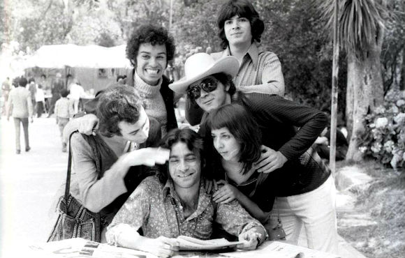
    <!--mstheme--></font></td>
    <td width="65%"><!--mstheme--><font face="Verdana, Arial, Helvetica"><p class="CM58" style="line-height: 100%; margin-left: 0; margin-right: 0cm; margin-top: 0cm; margin-bottom: 0">Juan y
      algunos miembros de <i>Grupo Ergónico</i>.
      En el grupo participaron jóvenes actores mexicanos que luego hicieron una
      carrera artística en su país: Sara Minter (videoasta), Héctor
      de Anda (artista visual), Olivier Debroise (curador reconocido), Mario
      Ficachi (director de teatro).<span lang="ES" style="font-family:&quot;Circularstd&quot;,&quot;serif&quot;;
color:#777777;background:#F3F3F3"><o:p>
      </o:p>
      </span></p>
      <p>&nbsp;<!--mstheme--></font></td>
  </tr>
</table><!--mstheme--><font face="Verdana, Arial, Helvetica">
<p class="CM58" style="line-height: 100%; margin-left: 0; margin-right: 0cm; margin-top: 0cm; margin-bottom: 0">&nbsp;</p>
<p style="line-height: 100%; margin-left: 0; margin-right: 0cm; margin-top: 0cm; margin-bottom: 0">Pero
Juan produjo mucho durante su estadía en México. En junio de 1972 el <i>Grupo Ergónico
</i>estrenó el montaje &quot;<a href="engels.htm">Tu propiedad privada no es la mía</a>&quot;
en los jardines de <i>Casa del Lago</i>, dentro de los predios de la UNAM, basado en el libro &quot;<i>El origen de la familia, la
propiedad privada y el Estado</i>&quot;, de Engels. Durante el montaje Juan
caminaba entre los actores y el público con un cinturón en la mano a modo de
látigo, por momentos actuando y en otros
lanzando consignas al grupo según la tensión del momento.&nbsp;Las funciones
no tenían límite de tiempo ni un final estipulado; algunas llegaron a durar
más de 3 horas. Otro
montaje del <i>Grupo Ergónico </i> fue “<i>Un teatro que surge de la peste</i>”,
basado en textos de Artaud, llevado a cabo en el teatro <i>El Galeón</i>, en el
marco de la <i>Primera Muestra de Teatro Latinoamericano</i>, a fines del '72. Después
de la expulsión, Juan giró con la compañía de Nuria Espert
con la obra &quot;<i>Yerma</i>&quot;.&nbsp;</p>
<p class="CM58" style="line-height: 100%; margin-left: 0; margin-right: 0cm; margin-top: 0cm; margin-bottom: 0">&nbsp;</p>
<p class="CM58" style="line-height: 100%; margin-left: 0; margin-right: 0cm; margin-top: 0cm; margin-bottom: 0"><a href="revista2001.htm">Entrevista-debate
sobre el teatro en revista &quot;<i>2001</i>&quot; (1973)</a></p>
<p class="CM58" style="line-height: 100%; margin-left: 0; margin-right: 0cm; margin-top: 0cm; margin-bottom: 0">&nbsp;</p>
<!--mstheme--></font><table border="0" width="92%">
  <tr>
    <td width="100%" colspan="2"><!--mstheme--><font face="Verdana, Arial, Helvetica"><p style="line-height: 100%; margin-left: 0; margin-right: 0 cm; margin-top: 0 cm; margin-bottom: 0">En
1974 y de vuelta en Argentina, creó el tercer taller, en <b> Santa Fe</b> (capital de la provincia donde nació)
      llamado <i>Teatro Laboratorio</i>, con el que replicó &quot;<i>El amor de la
      estanciera</i>&quot;. Juan
nunca militó en un partido político, pero se identificaba con la izquierda
peronista y trabajó con ese sector desde el arte y la cultura. Trabajó para la&nbsp;
<i>Secretaría de Cultura de Santa Fe</i>,
desarrollando encuentros y muestras de arte alternativo que lo confrontaron con la derecha peronista,
dominante políticamente en ese entonces (gobernaba el país). Un punto álgido del conflicto fue el montaje
      &quot;<i>Comunión</i>&quot; que Juan dirigió en 1975, un hecho teatral en apoyo al movimiento homosexual que luchaba por el
ingreso irrestricto de homosexuales a la universidad, lucha que más adelante
fue ganada. El secretario de cultura, de la izquierda peronista y protector de
Juan, debió renunciar. La gota que rebalsó el vaso fue una muestra de la <i>Escuela
de arte dramático de Santa Fe</i>, dirigida por Juan a fines del '75, en el que
los estudiantes se desvistieron durante un ejercicio. El padre de uno de ellos
era militar, y producido el golpe pocos meses después, le inició una causa a
Juan por <i>corrupción ideológica de menores</i>. Juan escapó a Buenos Aires
      con su familia y algunos miembros del taller santafecino.&nbsp;En
      las fotos de abajo,
 Juan con Ana y con su hija Eva en Santa Fe.</p>
    <!--mstheme--></font></td>
  </tr>
  <tr>
    <td width="50%"><!--mstheme--><font face="Verdana, Arial, Helvetica">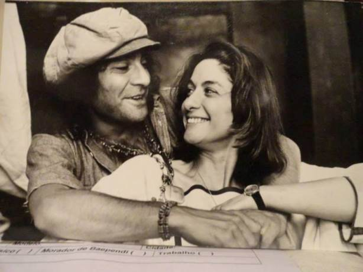<!--mstheme--></font></td>
    <td width="50%"><!--mstheme--><font face="Verdana, Arial, Helvetica">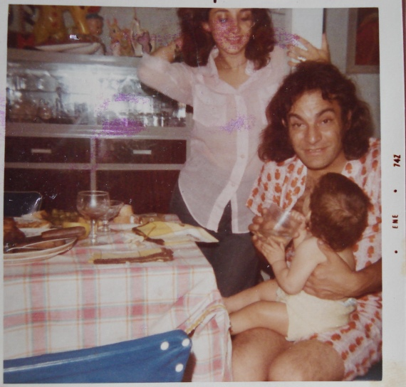&nbsp;<!--mstheme--></font></td>
  </tr>
</table><!--mstheme--><font face="Verdana, Arial, Helvetica"><!--mstheme--></font><table border="0" width="100%">
  <tr>
    <td width="36%"><!--mstheme--><font face="Verdana, Arial, Helvetica">
      <p align="center">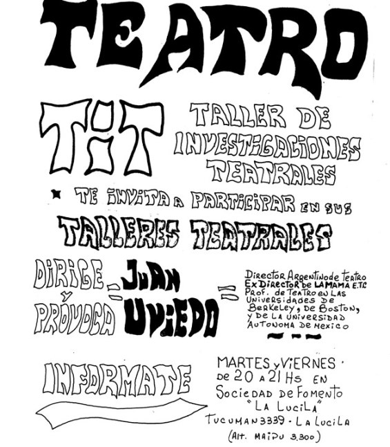</p>
    <!--mstheme--></font></td>
    <td width="64%"><!--mstheme--><font face="Verdana, Arial, Helvetica">&nbsp;A fines de 1976 (pocos meses después del golpe
      militar que dio comienzo a la dictadura genocida), y como parte del
      proceso de creación de talleres en diferentes ciudades latinoamericanas,
      Juan inició el <b> TiT Buenos Aires</b>, primero en una sociedad de fomento
      barrial de <i>La Lucila</i> (en el Gran Buenos Aires) y luego de unos
      meses se mudó a la Sala Moliere, en la Capital. En esa época ingresaron
      al taller Ricardo Chiari, Gallego, Marta Gali, Raúl Zolezzi, Chacho
      (Pablo Navarro Espejo). En marzo del ’78 Juan fue arrestado y llevado preso a la
Cárcel de Las Flores en la provincia de Santa Fe, a raíz de la causa abierta. Chiari, Gallego y Gali visitaban a Juan en la cárcel y lograron que el abogado socialista Enrique
Broquen asumiera su defensa, a la vez que garantizaron que el taller siguiera
      funcionando. En la cárcel, Juan organizó a los presos, fue solidario,
      defendió a los más débiles, y se ganó el respeto de todos. El 31 de diciembre de 1978 logró fugarse
      y escapar a Brasil,
      donde residió indocumentado el resto de su vida.
      <p>&nbsp;<!--mstheme--></font></td>
  </tr>
</table><!--mstheme--><font face="Verdana, Arial, Helvetica">
<p class="CM58" style="line-height: 100%; margin-left: 0; margin-right: 0cm; margin-top: 0cm; margin-bottom: 0">&nbsp;</p>
<p style="line-height: 100%; margin-left: 0; margin-right: 0cm; margin-top: 0cm; margin-bottom: 0">A
principios de los '80 produjo algunos montajes en Brasil, por ejemplo &quot;<i>Caixa
de cimento</i>&quot; con la actriz Ruth Escobar. Pero a mediados de la década
su vida dio un giro total; después de separarse de Ana fue a vivir a un pequeño municipio de 6.000
habitantes del estado de <i>Minas
Gerais</i>, llamado <i><b>Sao Thomé das letras</b></i>, famoso por sus piedras con
poderes energético-curativos y por avistajes de ovnis en sus
alrededores. Juan compró allí una pequeña montaña y en la cima él mismo
construyó su humilde casa de piedra. Varios jóvenes lo siguieron y fueron a
vivir a ese municipio, entre ellos algunos antiguos titeanos. Su vida
errante de décadas llegaba a&nbsp;su fin. Había encontrado su lugar. Juan se
ganó el respeto de la comunidad y a menudo se lo consultaba para solucionar
conflictos o por cuestiones personales. Desarrolló el &quot;<i>Jogo das pedras</i>&quot;,
(una actividad que a partir de 64 piedras diferentes permite la reprogramación
de la persona para mejorar su bienestar psicofísico), como parte de una &quot;<i>cosmologia
xamánica</i>&quot;. Se lo empezó a llamar &quot;<i>Dom Juan</i>&quot;. En el '89 abrió la &quot;<i>Casa
da Criança</i>&quot; para dar refugio, comida y clases a niños sin hogar.
Con el tiempo se convirtió en <i><a href="vivacrianca.htm">Associaçao Comunitária Viva Criança</a></i>
y se ampliaron las instalaciones para
ofrecer además espacios de juego y actividades artísticas a todos los niños
del lugar. Como parte de la fundación Juan creó una radio comunitaria (<i>Radio
da montanha</i>). Su fama como chamán creció y empezó
a ser visitado por personas de otros lugares, e incluso extranjeros que viajaban
especialmente para entrevistarse con él. Daba conferencias sobre su &quot;<i>Jogo
das pedras</i>&quot; en hoteles importantes de San Pablo, y como llevaba una vida austera, casi todo lo que ganaba
lo gastaba en la comunidad, especialmente en <i>Viva Criança</i>.</p>
<p class="CM58" style="line-height: 100%; margin-left: 0; margin-right: 0cm; margin-top: 0cm; margin-bottom: 0">&nbsp;</p>
<p class="CM58" style="line-height: 100%; margin-left: 0; margin-right: 0cm; margin-top: 0cm; margin-bottom: 0"><a href="https://www.youtube.com/watch?v=OlqHSxnjgas">Link
a video donde Juan describe su actividad chamánica</a> (realizado en enero de
2009)</p>
<p class="CM58" style="line-height: 100%; margin-left: 0; margin-right: 0cm; margin-top: 0cm; margin-bottom: 0">&nbsp;</p>
<p style="line-height: 100%; margin-left: 0; margin-right: 0cm; margin-top: 0cm; margin-bottom: 0">Cada
tanto se las rebuscaba para entrar solapadamente a Argentina y de paso producir
algo en Buenos Aires. Por ejemplo en
1985 realizó el montaje &quot;<i>La última cena</i>&quot; en &quot;<i>El Bancadero</i>&quot; (<i>Asociación
    mutual de asistencia psicológica</i>) y en una casona de la calle Julián
    Álvarez, con antiguos titeanos. En
1988 dirigió actores en el cortometraje &quot;<i>La eucaristía según Juan
Uviedo</i>&quot;,
producido y realizado por <i>Adoquín Video</i>.</p>
<p class="CM58" style="line-height: 100%; margin-left: 0; margin-right: 0cm; margin-top: 0cm; margin-bottom: 0">&nbsp;</p>
<!--mstheme--></font><table border="0" width="100%">
  <tr>
    <td width="49%"><!--mstheme--><font face="Verdana, Arial, Helvetica">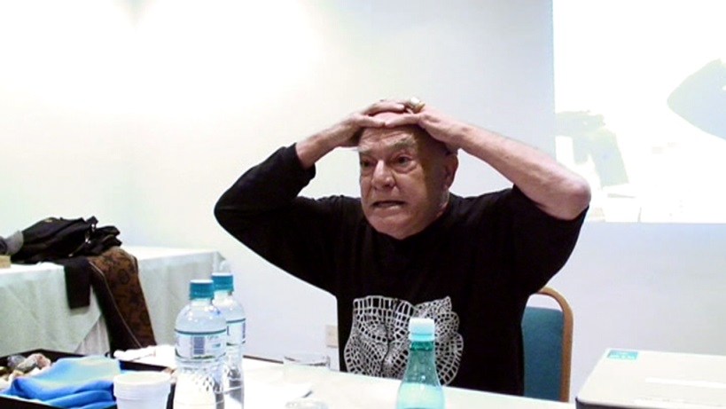<!--mstheme--></font></td>
    <td width="51%"><!--mstheme--><font face="Verdana, Arial, Helvetica">&nbsp;Juan dando una conferencia sobre su &quot;<i>Jogo das
      pedras</i>&quot; en un hotel de San Pablo. En 2006, en base a ese
      &quot;juego&quot;, propuso una
actividad para aglutinar y movilizar a toda la comunidad de <i>Sao Thomé das
letras</i>, llamada &quot;<a href="santos.htm">Santos profanos</a>&quot;.<!--mstheme--></font></td>
  </tr>
  <tr>
    <td width="49%"><!--mstheme--><font face="Verdana, Arial, Helvetica">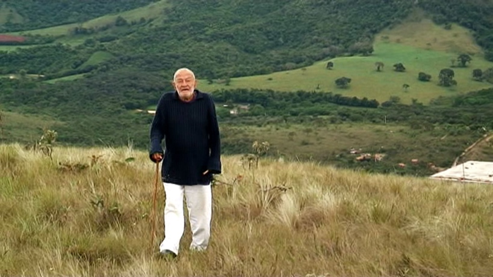<!--mstheme--></font></td>
    <td width="51%"><!--mstheme--><font face="Verdana, Arial, Helvetica">&nbsp;Juan en su montaña de <i>Sao Thomé das letras</i>.<!--mstheme--></font></td>
  </tr>
  <tr>
    <td width="49%"><!--mstheme--><font face="Verdana, Arial, Helvetica">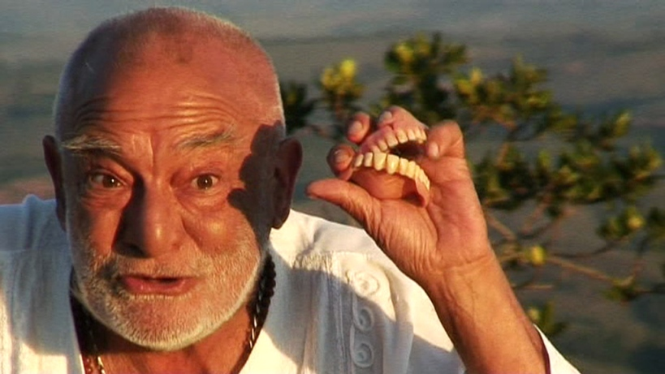<!--mstheme--></font></td>
    <td width="51%"><!--mstheme--><font face="Verdana, Arial, Helvetica">&nbsp;En 2009 recibió en su montaña la visita de antiguos
      titeanos (Chiari,
      Gallego, Paula) y un equipo de producción de <i>Adoquín Video
      Digital</i> (que incluia a sus directores Pablo Navarro Espejo y Silvia Maturana)
      con el objetivo de filmarlo en su entorno para el documental sobre su arte
      y su vida, llamado &quot;<i><a href="film.htm">El provocador</a></i>&quot;.
      Hubo entrevistas a Juan y allegados, a personalidades y residentes del
      municipio, a titeanos; una muestra teatral con gente del pueblo dirigida
      por Juan (&quot;<i>Cámara maluca</i>&quot;), un ensayo en la montaña dirigido por Chiari. Y
      charlas con muchos recuerdos
      cargados de afecto.<!--mstheme--></font></td>
  </tr>
</table><!--mstheme--><font face="Verdana, Arial, Helvetica"><p class="CM58" style="line-height: 100%; margin-left: 0; margin-right: 0cm; margin-top: 0cm; margin-bottom: 0">&nbsp;</p>
<p style="line-height: 100%; margin-left: 0; margin-right: 0cm; margin-top: 0cm; margin-bottom: 0"> El 17 de noviembre de 2009,
Juan falleció de muerte natural. La mayor parte de su vida fue un viajero
errante, forzosa o voluntariamente. Pero después de irse de un lugar, ese lugar
(un pueblo, una ciudad, un país, un teatro, una cárcel) ya nunca volvió a ser el mismo de antes, y no solo en términos artísticos.</p>
<p class="CM58" style="line-height: 100%; margin-left: 0; margin-right: 0cm; margin-top: 0cm; margin-bottom: 0"> &nbsp;</p>
<!--mstheme--></font><table border="0" width="100%">
  <tr>
    <td width="28%"><!--mstheme--><font face="Verdana, Arial, Helvetica">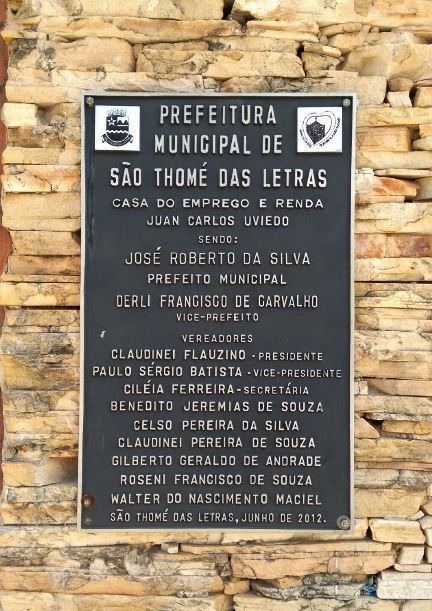<!--mstheme--></font></td>
    <td width="72%"><!--mstheme--><font face="Verdana, Arial, Helvetica"><p style="line-height: 100%; margin-left: 0; margin-right: 0cm; margin-top: 0cm; margin-bottom: 0">Fue
      tan considerado por la gente de <i>Sao Thomé das letras</i>, que desde
      2012 la casa municipal de empleo e ingresos lleva su nombre.</p>
      <p>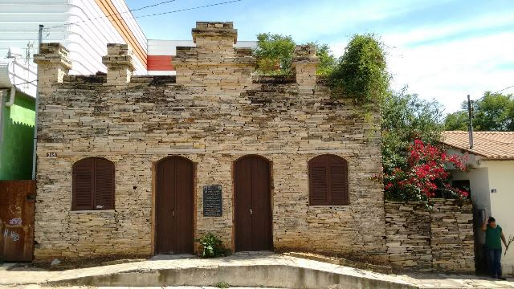<!--mstheme--></font></td>
  </tr>
</table><!--mstheme--><font face="Verdana, Arial, Helvetica">
<p class="CM58" style="line-height: 100%; margin-left: 0; margin-right: 0cm; margin-top: 0cm; margin-bottom: 0"> &nbsp;</p>
<p class="CM58" style="line-height: 100%; margin-left: 0; margin-right: 0cm; margin-top: 0cm; margin-bottom: 0">&nbsp;</p>
<p style="line-height: 100%; margin-left: 0; margin-right: 0cm; margin-top: 0cm; margin-bottom: 0"> Durante
varios meses de 2015 el MUAC (<i>Museo Universitario de Arte Contemporáneo</i>,
de la ciudad de México) realizó la muestra &quot;<a href="muac.htm">Con la provocación de Juan
Carlos Uviedo</a>&quot;, con archivos que evocaban su vida y su producción
artística.</p>
<p class="CM58" style="line-height: 100%; margin-left: 0; margin-right: 0cm; margin-top: 0cm; margin-bottom: 0">&nbsp;</p>
<!--msthemeseparator--><p align="center"></p>
<p class="CM58" style="margin-top:0cm;margin-right:0cm;margin-bottom:26.1pt;
margin-left:33.85pt;line-height:26.0pt">&nbsp;</p>
&nbsp;<!--mstheme--></font><!--msnavigation--></td></tr><!--msnavigation--></table></body>

</html>
